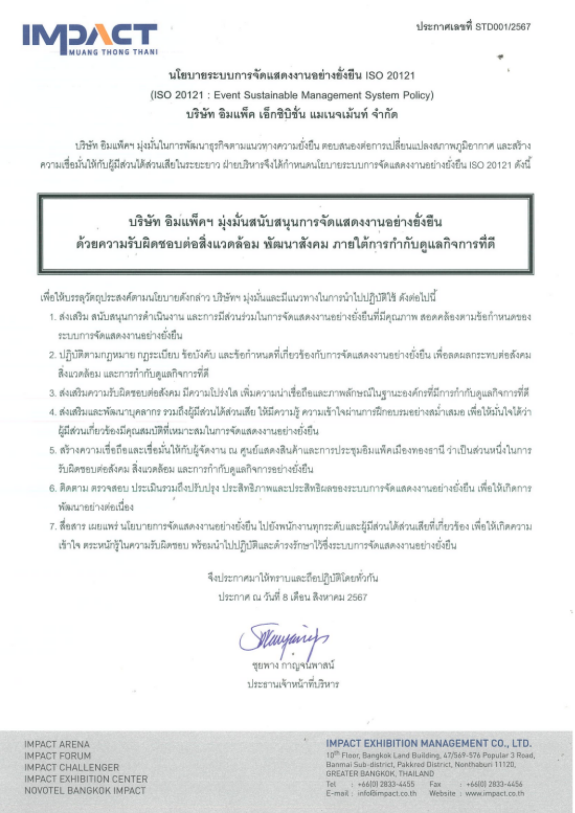
อย่างยั่งยืน
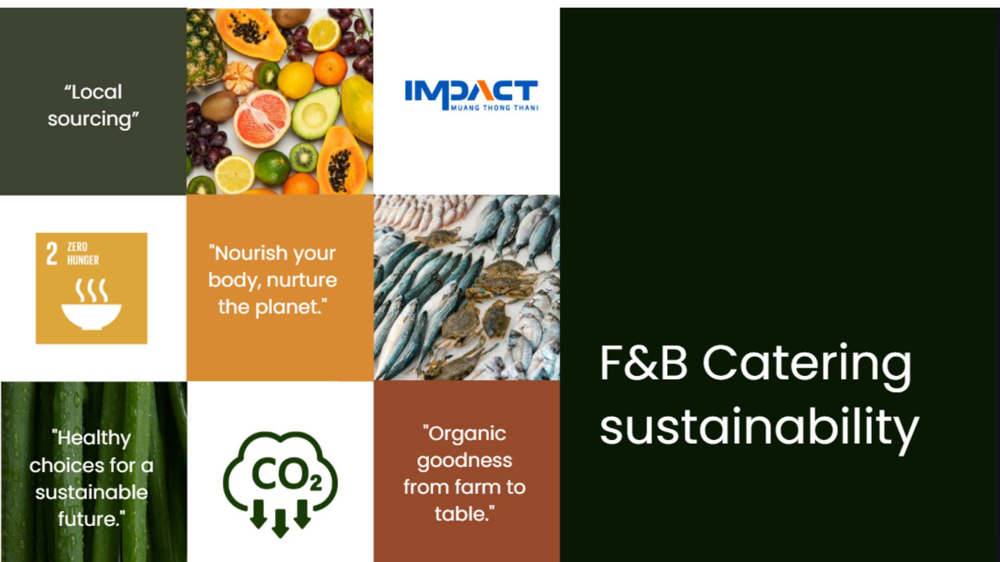
อย่างยั่งยืน
บริการอาหารและเครื่องดื่ม
กับการจัดการงานอย่างยั่งยืน

IMPACT เมืองทองธานี
มุ่งยกระดับอาหารและเครื่องดื่มในทุกอีเวนต์ ด้วยวัตถุดิบท้องถิ่น ลดของเสียอย่างเป็นระบบ และขับเคลื่อนอุตสาหกรรม MICE สู่ความยั่งยืน

LOCAL SOURCING
ใช้วัตถุดิบที่มาจากชุมชนใกล้เคียงเพื่อลดการปล่อยมลพิษจากการขนส่ง พร้อมส่งเสริมเศรษฐกิจท้องถิ่นให้เติบโตอย่างยั่งยืน

IMPACT FARM
(ตลาดร่วมใจ / สวนคุณอนันต์)
เริ่มปี 2565
สนับสนุนชุมชนผ่านผลผลิตออร์แกนิก
ขยายเครือข่ายทั่วประเทศเพื่อส่งวัตถุดิบสดใหม่สู่บริการอาหาร
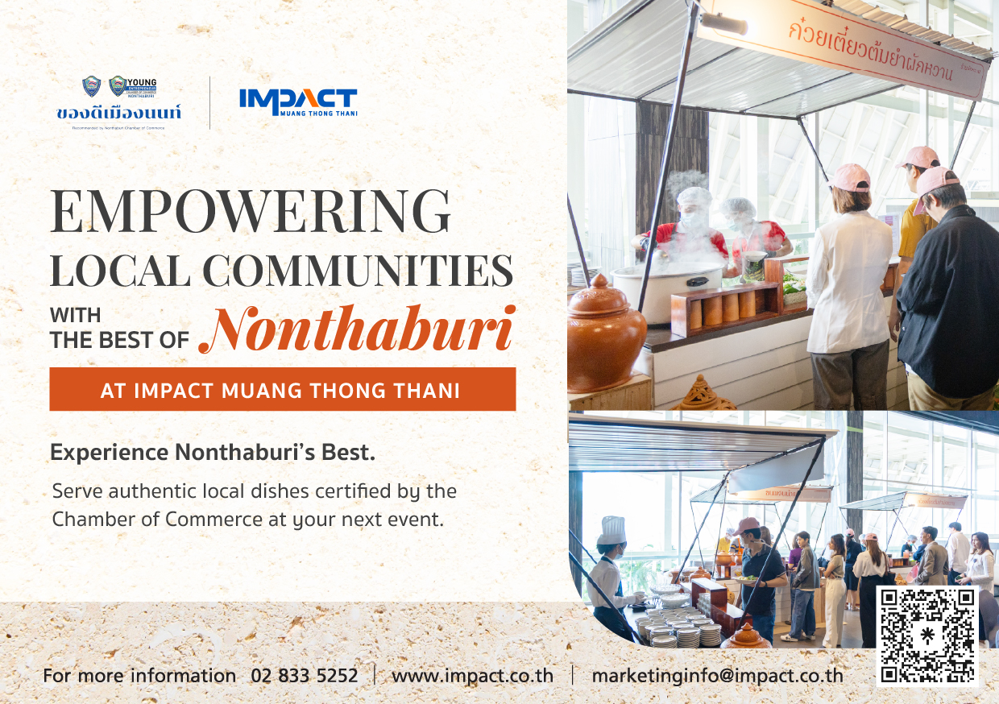
ของดีเมืองนนท์
(Khong Dee Muang Non)
ร่วมกับร้านอาหารท้องถิ่น 8
ร้าน ในโครงการ Nont Premium Selection
มอบอาหารท้องถิ่นแท้ พร้อมสร้างรายได้ยั่งยืน
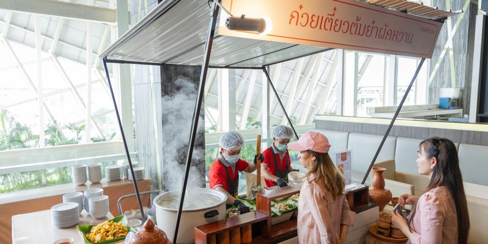
ร้านเด็ดเมืองทอง
(Raan Ded Muangthong)
โครงการสนับสนุนผู้ค้าท้องถิ่นในเมืองทองธานี
เสริมธุรกิจขนาดเล็ก และสร้างรายได้ที่มั่นคงให้ชุมชน

Plant-Based
Vegetarian
🌱 อาหารจากพืช
ส่งเสริมสุขภาพ ลดการปล่อยก๊าซ
และสนับสนุนระบบอาหารยั่งยืน

Seasonal Fruits
& Vegetables
🥦 วัตถุดิบตามฤดูกาล
คัดเลือกผักผลไม้ตามฤดูกาลเพื่อความสดใหม่ ลดพลังงาน
และสนับสนุนเกษตรท้องถิ่น

Low-Carbon
Food
🌍 เมนูคาร์บอนต่ำ
เลือกวัตถุดิบและเมนูที่ปล่อยก๊าซเรือนกระจกต่ำตลอดวงจรชีวิต

SUSTAINABLE PACKAGING
ลด-คัดแยก-นำกลับมาใช้ใหม่ ทั้งในกระบวนการผลิต บริโภคและบรรจุภัณฑ์
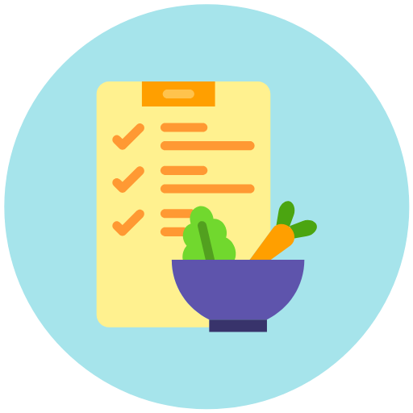
วางแผนลดส่วนเกิน
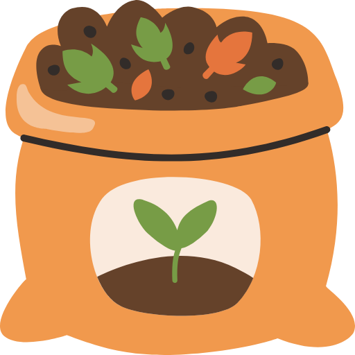
ทำปุ๋ยจากเศษวัตถุดิบ
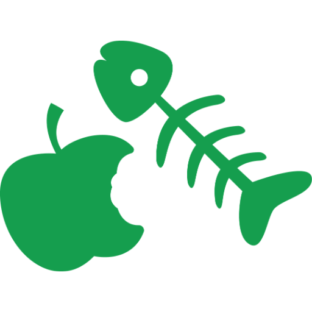
คัดแยกรีไซเคิลอาหารสัตว์
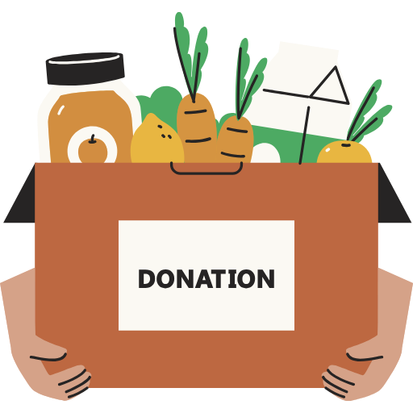
บริจาคอาหารส่วนเกิน
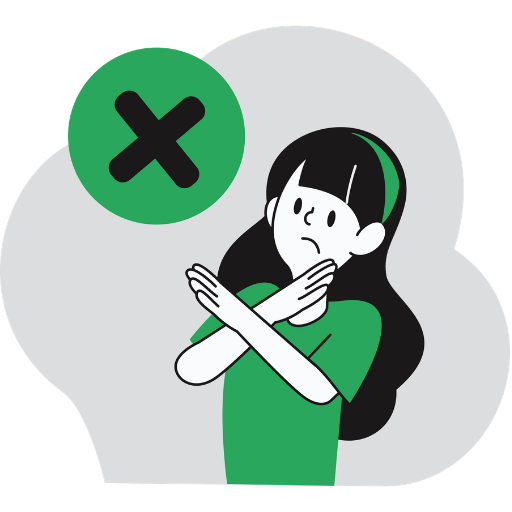
ปฏิเสธ
(Refuse)
งดใช้บรรจุภัณฑ์ย่อยสลายไม่ได้
(โฟมและถุงพลาสติก)
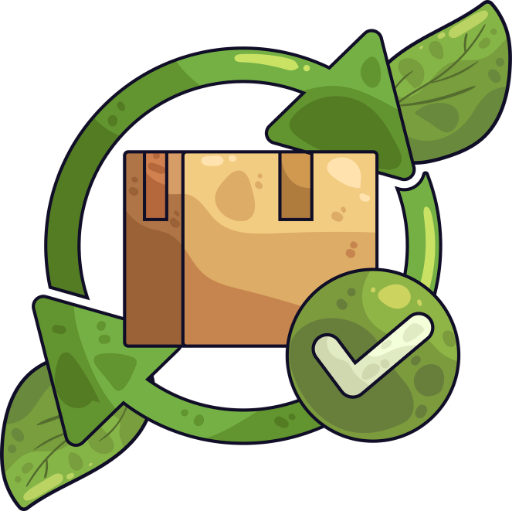
ทดแทน
(Replace)
ใช้วัสดุย่อยสลายได้
ถุงกระดาษ และ
ภาชนะแก้ว
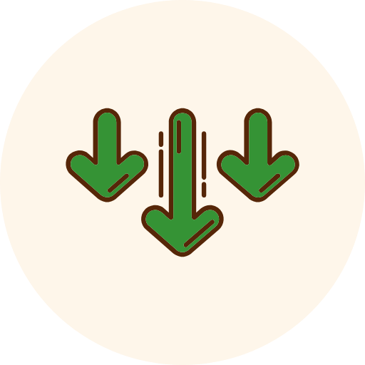
ลดลง
(Reduce)
จัดสถานีน้ำดื่มและชามเครื่องปรุงแบบเติมได้
เพื่อลดบรรจุภัณฑ์ที่ใช้ครั้งเดียว
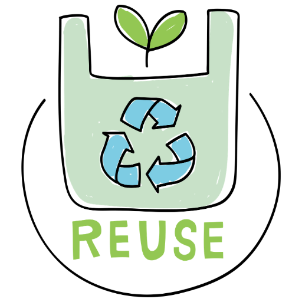
ใช้ซ้ำ
(Reuse)
ภาชนะแบบทนทานที่สามารถล้างและ
นำกลับมาใช้ซ้ำได้ตลอดอายุการใช้งาน
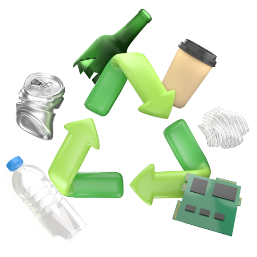
รีไซเคิล
(Recycle)
คัดแยกบรรจุภัณฑ์ที่รีไซเคิลได้อย่างถูกต้อง